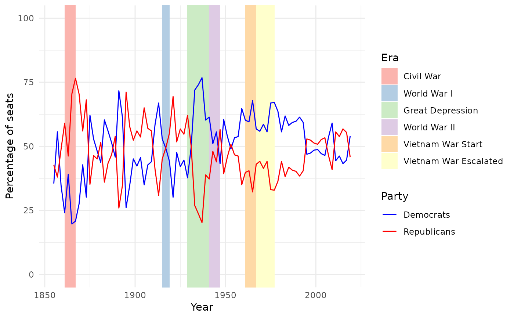

The make-up of the United States House of Representatives every two years since 1789. The last Congress included is the 112th Congress, which completed its term in 2013.
houseFormat
A data frame with 112 observations on the following 12 variables.
- congress
The number of that year's Congress
- year_start
Starting year
- year_end
Ending year
- seats
Total number of seats
- p1
Name of the first political party
- np1
Number of seats held by the first political party
- p2
Name of the second political party
- np2
Number of seats held by the second political party
- other
Other
- vac
Vacancy
- del
Delegate
- res
Resident commissioner
Source
Party Divisions of the House of Representatives, 1789 to Present. https://history.house.gov/Institution/Party-Divisions/Party-Divisions.
Examples
library(dplyr)
library(ggplot2)
library(forcats)
# Examine two-party relationship since 1855
house_since_1855 <- house %>%
filter(year_start >= 1855) %>%
mutate(
p1_perc = 100 * np1 / seats,
p2_perc = 100 * np2 / seats,
era = case_when(
between(year_start, 1861, 1865) ~ "Civil War",
between(year_start, 1914, 1918) ~ "World War I",
between(year_start, 1929, 1939) ~ "Great Depression",
between(year_start, 1940, 1945) ~ "World War II",
between(year_start, 1960, 1965) ~ "Vietnam War Start",
between(year_start, 1965, 1975) ~ "Vietnam War Escalated",
TRUE ~ NA_character_
),
era = fct_relevel(era, "Civil War", "World War I",
"Great Depression", "World War II",
"Vietnam War Start", "Vietnam War Escalated")
)
ggplot(house_since_1855, aes(x = year_start)) +
geom_rect(aes(xmin = year_start, xmax = lead(year_start),
ymin = -Inf, ymax = Inf, fill = era)) +
geom_line(aes(y = p1_perc, color = "Democrats")) + # Democrats
geom_line(aes(y = p2_perc, color = "Republicans")) + # Republicans
scale_fill_brewer(palette = "Pastel1", na.translate = FALSE) +
scale_color_manual(
name = "Party",
values = c("Democrats" = "blue", "Republicans" = "red"),
labels = c("Democrats", "Republicans")
) +
theme_minimal() +
ylim(0, 100) +
labs(x = "Year", y = "Percentage of seats", fill = "Era")
#> Warning: Removed 1 rows containing missing values (geom_rect).
